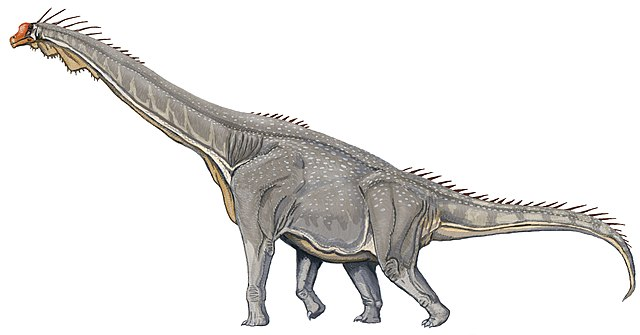
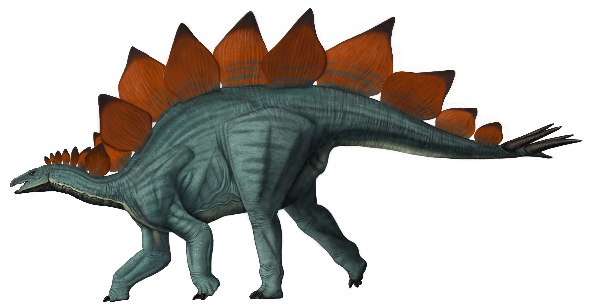
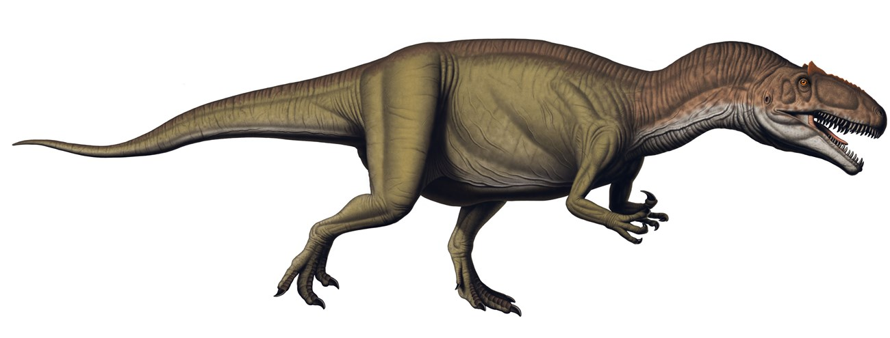
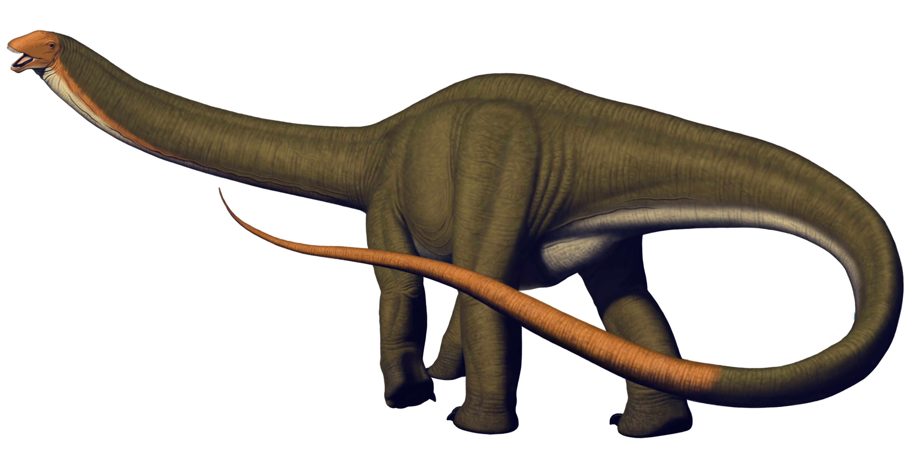
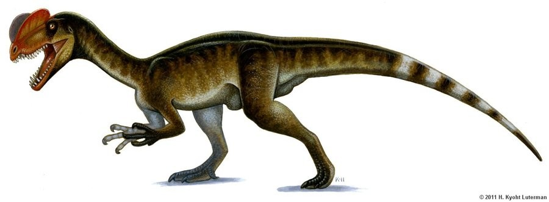

The Jurassic Period
The Jurassic Period, lasting from approximately 201 to 145 million years ago, marks the middle chapter of the Mesozoic Era, following the Triassic and preceding the Cretaceous Period. This period is often recognized as the "Golden Age of Dinosaurs" due to the flourishing and diversification of these creatures. It was during the Jurassic that dinosaurs reached their peak in terms of size and variety, as they became the dominant terrestrial animals. The climate of the Jurassic was warm and humid, contributing to lush vegetation and the rapid evolution of plant life, such as ferns, cycads, and conifers. These plants provided ample food for the herbivorous dinosaurs that grew to enormous sizes. During this time, the Earth experienced significant geological changes as the supercontinent Pangaea continued to break apart into smaller continents, leading to the formation of Laurasia in the north and Gondwana in the south. This shift in landmasses altered ocean currents and had a lasting impact on global ecosystems.
The Jurassic Period also witnessed the evolution of the first true birds, which evolved from small theropod dinosaurs. Mammals, though still small and relatively insignificant, also began to diversify. The evolutionary developments during the Jurassic set the stage for the rise of new species and the further expansion of dinosaurs into new ecological niches. The Jurassic was, therefore, a time of dramatic biological change, with the land, skies, and seas teeming with a variety of life forms.
Brachiosaurus
Brachiosaurus is one of the most iconic dinosaurs from the Jurassic Period, known for its immense size and unique physical characteristics. This enormous sauropod reached lengths of up to 85 feet and stood about 40 feet tall, making it one of the largest land animals of its time. Unlike many other sauropods, Brachiosaurus had longer front legs than hind legs, which allowed its neck to be held high, enabling it to reach vegetation at the tops of trees. This adaptation made Brachiosaurus an effective feeder of tall plants, giving it a distinct advantage in the Jurassic forests. Fossils of Brachiosaurus have been found in North America and Africa, highlighting its widespread presence during the period.
Stegosaurus
Stegosaurus is perhaps best known for its distinctive row of large, bony plates along its back and the spikes on its tail. This herbivorous dinosaur grew to about 30 feet in length and had a small head relative to its body, giving it a somewhat awkward appearance. Stegosaurus likely used its plates for thermoregulation or as a display feature to attract mates or ward off predators. Its tail, equipped with spikes, was used as a defense mechanism against carnivores like Allosaurus. Fossils of Stegosaurus have been found in North America, and it remains one of the most recognizable dinosaurs of the Jurassic.
Allosaurus
Allosaurus was one of the most fearsome predators of the Jurassic Period, with a length of up to 40 feet. This large theropod had sharp teeth and claws, which it likely used to hunt herbivorous dinosaurs such as Stegosaurus and Apatosaurus. Allosaurus was a highly skilled hunter, and its relatively agile body allowed it to chase down and ambush prey. Some paleontologists believe that Allosaurus may have hunted in packs, making it even more dangerous to other dinosaurs. Fossils of Allosaurus have been found across North America, making it one of the most well-known theropods of the period.
Apatosaurus
Apatosaurus was another massive sauropod from the Jurassic Period, similar to Brachiosaurus but with a more typical body structure for its kind. It grew up to 75 feet in length and weighed several tons. Apatosaurus had a long neck, which it likely used to feed on vegetation from trees and plants. Unlike Brachiosaurus, which had a more upright posture, Apatosaurus had a body that allowed it to graze at a lower height, feeding on the ferns and conifers that flourished during the Jurassic. The long tail of Apatosaurus may have been used for defense against predators like Allosaurus. Fossils of Apatosaurus have been found primarily in North America.
Dilophosaurus
Dilophosaurus was a relatively small theropod that lived during the Early Jurassic. It is best known for the distinctive crests on its head, which may have been used for display, either in mating rituals or as a way to assert dominance over other individuals of its species. Measuring about 20 feet in length, Dilophosaurus was a carnivorous dinosaur with a relatively light build, which made it fast and agile. It is believed to have hunted smaller herbivores and scavenged carcasses. Despite its size, Dilophosaurus was an important part of the predator-prey dynamics in the Jurassic ecosystem. Fossils of Dilophosaurus have been found in North America and are significant for understanding the early evolution of theropod dinosaurs.